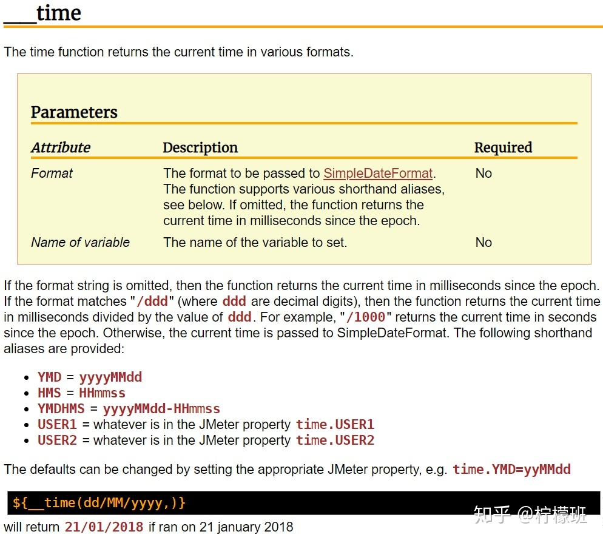
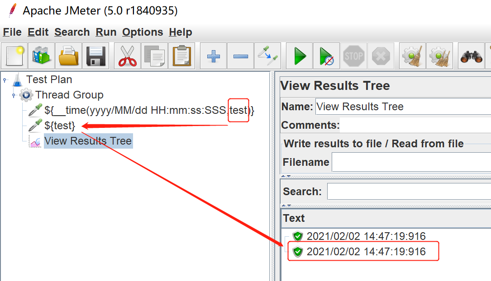
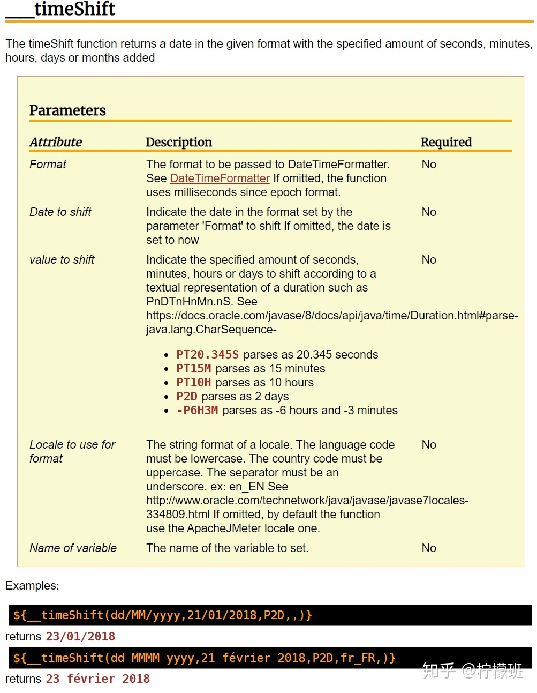

time函数
该函数可获取系统当前时间。默认的情况下获取的是当前时间戳。
该函数有两个参数可填。

第一个参数是格式化当前时间，填写后返回对应格式的时间。
第二个函数是设置变量名称的函数，可以通过这个变量调用返回的值。
如图所示：

timeShift函数
该函数可以实现时间位移。该函数默认也是获取当前时间戳。

第一个参数是格式化时间。填写后返回对应格式的时间，如果不填写返回时间戳。
我需要常用的格式：
1 | ${__timeShift(yyyy/MM/dd HH:mm:ss:SSS,,,,)} |
第二个参数，没发现什么用处。
第三个参数是时间位移。“-”表示减时间，“+”或者无符号表示加时间。大写“P”为固定前缀，【D,H,M,S】为时间单位。”D”为天，“H”为小时，“M”为分钟，“S”为秒。单位是【 H\M\S】的情况下必须使用”T”。例如,
1 | 减2个小时："-PT2H" |
第四个参数，区域语言设置。
第五个参数，跟time的第二个函数同义。

![微信分享二维码]()